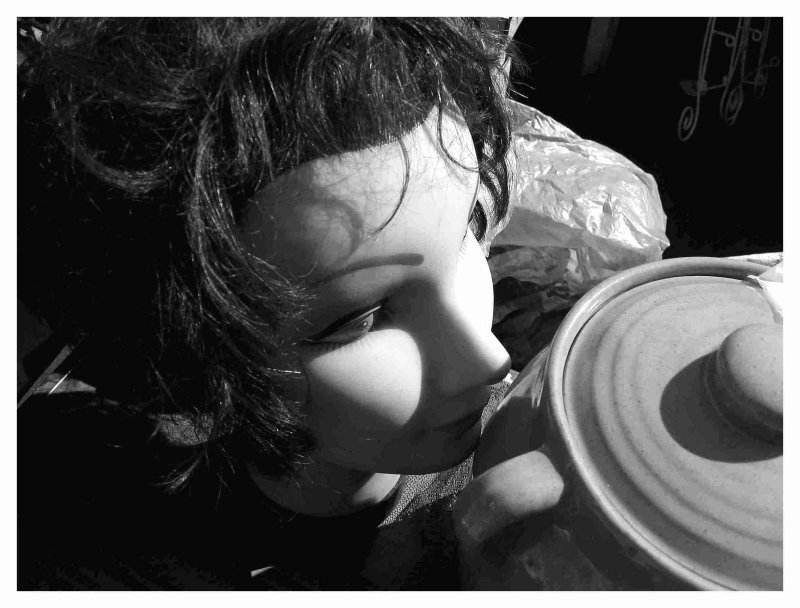

Mom used to shout, “You're gonna get run over! (Photo courtesy of S. Bottger.)
What is a miracle?
Anything that reminds us that what we can't see is more important than what we can.
Who can say where and when miracles happen?
In an alley beside the tracks? In a parking lot on the other side of a fence? On a sidewalk in the middle of a block?
What matters is that they have happened before and will happen again wherever tears flow and blood boils and men are lonely and broken, outside and in.
“Son-of-a-bitch,” he snarled.
Saliva sprayed the dash as his hands slammed the steering wheel. Traffic was heavy. The foreman took him aside right before it was time to punch out. He wasn't fired—not “fired, fired”—just let go, again.
“Things are slow all over.”
“Maybe it'll pick up after the holidays.”
“Other guys have been here longer.”
“Some freaking Christmas this'll be. How long can one check last?”
Pulling out of the lot, he saw Tonya sitting in Ricky's car—now that hurt. Ricky was supposed to be his friend. Used to be, anyway. Ricky still had a job. Tonya was Tonya.
“Can't afford her now anyway,” he muttered.
It stings as much today as it did when he was five.
Traffic was moving again. He was headed God knows where. To the liquor store. To nowhere in particular. To sit in the basement with his cousin Eddie. Eddie liked to drink. Got his disability check on the third, and he was good to go. Eddie collected things, girlie mags mostly, guns too. Sometimes when Eddie had a lot to drink, he would let you look at his guns, hold them, pretend they were yours. New Year's Eve was always a blast with Eddie. Pop off a few in the alley 'til the neighbors complained and called the cops. He looked up to Eddie, more than either one knew.
He noticed a girl in tight jeans and a short jacket standing at the bus stop—he thought about Tonya.
“Better cruise around the block and check that one out again.”
“What the—” he groaned, missing the entrance to the parking lot between Foremost Liquors and the Currency Exchange.
He went around the corner to the alley beside the “L” tracks.
“One Way.”
“Do Not Enter.”
“Aww, Christ!”
He hesitated.
“Screw it.”
Tires squealing, he sped down the alley heading for the entrance at the rear of the parking lot. Just then a squad car turned into the alley from the block ahead, facing his way.
“Jeeze” he moaned. “Maybe he's gonna back out.”
The squad continued forward.
“Think, you moron!”
He saw an opening in the fence to his left and took it. An empty parking lot. Clean. Peaceful. Someone had swept up the litter and painted over the graffiti on the walls. Even the dumpster's lids were closed. He saw the squad pass in the rear view mirror and let out a sign of relief.
He sat in the car for a moment.
“Something ain't right.”
He stared at the building but didn't get out. He felt something different—a tug, a push—something he didn't recognize. Moments earlier he felt crushed, humiliated. Now he felt—what? Relieved? His mood was still bitter, but its momentum was broken. He'd often wondered if there was something else, something that was supposed to matter, something that was supposed to last, but he couldn't imagine what it would look like or where it might be found. He slowly pulled out into traffic. His eyes caught a sign on the lawn as he turned his head.
“Hurting? God Can Help.”
“How come I never saw that before?”
He'd lived in this neighborhood for years and driven down these streets more times than he could count.
A week passed, then two. He had a hangover on Sunday morning. He felt sick to his stomach. He didn't know much about church to tell the truth. Once he saw a funeral procession leave a church parking lot, tying up traffic for ten minutes.
“Caddies and Lincolns! Those folks had it made.”
He remembered when his uncle passed and how hardly anyone even called. Once he saw a wedding party taking photos on the church steps.
“Church is for other people,” he muttered. “I wouldn't know what to do. I would feel stupid.”
He remembered how mom took him to a church once, when he was little. It was summertime, too hot to be playing in the hall or on the stairs. The porch was off limits. Three stories up. Kids got hurt doing crazy things, climbing around like Spider-man, trying to fly. Besides, you could peek in the window of the back bedroom. That pissed off mom big time. Sometimes the kids opened the hydrant at the corner.
Mom used to shout, “You're gonna get run over!”
He chuckled—back then he thought, “What's wrong with getting run over? You get to ride in the ambulance!”
Church that night wasn't so bad. He got to run around inside, in the air conditioning. Other kids from the block were there too. Mom disappeared after a few minutes. Came back three hours later, and her kisses tasted like beer.
“What a trip,” he recalled. “Fat guy with a funny hat singing songs and clapping. People who acted like they cared, like they wanted me around. Nobody hit me when I misbehaved. They gave me something to eat.”
This went on three nights in a row. The kids were supposed to get a poster or something, but mom forgot to take him back for that.
Another week went by. One day his aunt called.
“Your papa's sick, yellow, not gonna make it.”
Papa left when he was four. Mom had a parade of men after that.
“Time for them, never for me.”
Some used to beat her. He remembered Carlos.
“Yeah, he was nice. Drove a bus. Used to give me a handful of quarters to get out of the apartment. Then his old lady came and picked a fight with mom. He never came around after that.”
He took the quarters to the laundromat on the corner to play the video game, but the big kids took the quarters and shoved him away. He tried to tell mom and Carlos, but they wouldn't open the door. Get out and stay out. That was the deal.
Nothing makes the anger go away. The empty feeling in his chest, the sick feeling in his gut. He still hasn't found a job. Wednesday afternoon comes, and he takes a walk.
“Need some fresh air,” he says to himself “and a pack of smokes.”
There's a Cut Rate on the corner. He crosses the street.
“Just a walk,” he says. “Never know what you might find.”
A block. Two. Cars pass. Loud stereos blasting from windows cracked open to let out the steam.
“Freaking Puerto Ricans,” he thinks. Papa was Puerto Rican.
“Nobody wants me. Nobody needs me.”
Not the boss. Not Tonya. Not even Eddie who passed out on the couch last night. It stings as much today as it did when he was five.
For no reason that he can discern, he finds himself in the middle of a block.
“Templo de Alabanza” says a hand painted sign above a door.
“Servicios: Miercoles 7:30 PM.”
The door is slightly ajar even on a cold day. Music streams out to the street.
“What the hell? Might be good for a few laughs. After all, what can these bozos have to say that I haven't heard already?”
He walks in and sits in the back where nobody will see. He can leave quickly if he has to.
Twenty years ago strangers made a little boy feel welcome, wanted, like he belonged, if only for a little while—strangers acting out of foolishness or kindness or love. Tonight a man comes in from the cold, wondering if there is something more than broken things and hurt feelings, wondering if there is anything else to be found and if he is in the right place to find it.
Tonight a man comes in from the cold. (Photo courtesy of S. Bottger.)